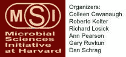

News Archives : 2007 : Microbial Sciences Symposium To Be Held Saturday, March 10
by Jim Henle
February 23, 2007
On Saturday, March 10, Harvard will host the Microbial Sciences Symposium, a major program open to the public, to be held in the Science Center on the Cambridge campus. Reflecting the convergence of many approaches to microbiological studies, the Symposium "features an exciting line up of speakers from the disciplines of engineering, physics, chemistry, earth and planetary sciences, and bacteriology," notes MCB Professor Richard Losick.
The Symposium is one of the more visible manifestations of the Microbial Sciences Initiative (MSI) at Harvard, an interdisciplinary program focused on understanding the microbial world. As the MSI mission statement notes, "The recent realization of the vastness of microbial diversity and the genomics revolution have propelled the microbial sciences into an exciting new era of investigation."
The evidence for this is everywhere in the Symposium. Topics span virtually the entire range of earth history and environment, from the generation of di-nitrogen gas on earth to microbial symbiosis involving one of earth’s more recent and interesting offerings, the human species. In addition, a variety of methodological approaches will be showcased, as befits the interdisciplinary project of MSI.
Co-directed by Colleen Cavanaugh (OEB) and Roberto Kolter (Microbiology and Molecular Genetics, HMS), the MSI links researchers in MCB, OEB, Chemistry, Physics and Earth and Planetary Sciences in FAS with DEAS and several Departments in the Harvard Medical School. The impulse to bring diverse researches together came from several sources. The importance of many microbes (bacteria, viruses, fungi, algae, etc.) as pathogens have long made them an obvious target for a range of investigations, as does their value as model organisms for the study of cell biology. But in addition more recent technological developments, especially genomics, have led to an explosion of new information and applications that can implicate several fields at once. For example, the ability of some bacteria to produce interesting chemicals may be of immediate interest to chemists, pharmacologists and evolutionary biologists, yet may also have unforeseen applications to basic cell studies. Gathering researchers from the many areas of involvement has become a necessity as well as a delight. As Professor Losick notes, "Microbiology is truly an interdisciplinary field!"
The MSI Symposium will be held from 8:45am – 5:00pm on Saturday, March 10, in Science Center Lecture Hall C. A reception outside the hall will follow.
